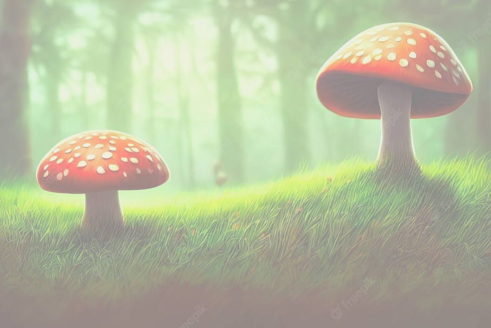

Bienvenido al mundo Fungi
Introducción
Fungí Explorer tiene como objetivo poner a disposición el compendio de información más completo de hongos macroscópicos del Ecuador. Los hongos del Ecuador comprenden un grupo de organismos versátiles y diversos en su morfología, fisiología y ecología, estas características les han permitido colonizar todo tipo de hábitats, desde páramos hasta selvas tropicales. Su amplia distribución refleja su importancia ecológica dentro de los ecosistemas. Los hongos son los principales degradadores y recicladores de la materia orgánica, y sin hongos no habría vida en la tierra. Sin su presencia, los restos de los seres vivos que mueren se acumularían y darían lugar a inmensos depósitos de materia orgánica. Además, los hongos han sido utilizados en la industria farmacéutica, alimentaria y agrícola contribuyendo de muchas maneras al bienestar humano, pero aún hay mucho por descubrir. Hasta la fecha, FungiWebEcuador dispone información de más de 7700 especímenes, agrupados en 60 órdenes, 155 familias, 472 géneros y 843 especies. FungiWebEcuador incluye una lista actualizada de especies con su respectiva distribución geográfica, identificación y taxonomía. El portal, además, comparte imágenes de la mayoría de especies de hongos del Ecuador, así como mapas de distribución actual y potencial de acuerdo con escenarios de cambio climático a futuro. Estos mapas se modifican con el crecimiento de las colecciones. Brindar información sobre diversidad, importancia ecológica y cultural es fundamental para el desarrollo de propuestas de manejo sustentable y así mantener la estabilidad de los ecosistemas de los cuales obtenemos los servicios esenciales para nuestro desarrollo humano..
Índice Taxonómico
Contenido de la sección de Índice Taxonómico.
Quiénes Somos
Contenido de la sección de Quiénes Somos.
Glosario
Contenido de la sección de Glosario.
Contáctenos
Jeremy Pavon: jjpavonb@utn.edu.ec/0997786962